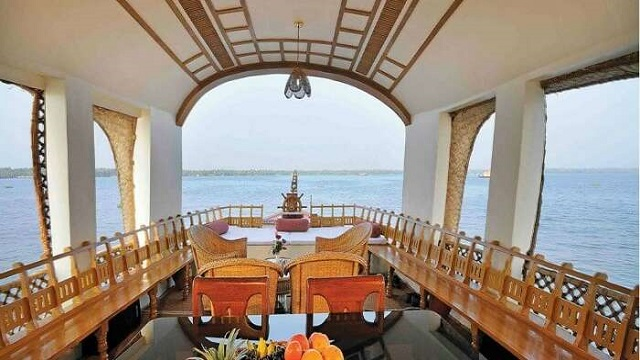

Journey to the South of India and God’s Own Country to discover a gem that offers tourists plenty of holiday thrills. Kasaragod is located in the famed Western Ghats and much of its topography reflects this. Green hills and coconut gardens create beautiful oases that are a treat to explore while the Arabian Sea to the west invites you to visit unspoilt beaches. The tourist places in Kasargod boasts of historical structures, religious sites, ritual worship like theyyam, and art forms like yakshagana and gombeyaata. If you’re fortunate enough, you can witness festivals like Sarvajanika Ganeshotsava and Mallikarjuna temple festival taking place. Like much of Kerala, Kasaragod is very tourist-friendly. You’ll have no difficulty finding places to stay. Getting from one local attraction to another is easy too and transportation is readily available. However, despite being a popular tourist destination, it doesn’t feel overdeveloped. It still retains an old world charm and this gives it a special character. If you’re planning to travel to Kasaragod, there are certain important details you should know. The tourist places in Kasaragod are definitely going to give you an experience of a lifetime. The experience so great that it will remain etched in your heart forever and you will share you travel tales with your dear ones. Hence, we’ve put together a list of them including the best time to visit, best tourist places and the best places to stay at. Read on to find out more about this beautiful town and district, Kasaragod.
PLACES TO EXPLORE
1.Malom Wildlife Sanctuary
This seldom explored wildlife sanctuary is one of the hidden Kasaragod attractions. The lush green hills of this sanctuary are the home of exotic flora and fauna. Tourists wishing to witness the rich wildlife of Molam can spot animals like elephants, bison, tigers, deer, and many more, may find this sanctuary a blissful place. Being home to more than 200 birds, this place is a heaven for birdwatchers. Location: 64 kilometers away from Kasaragod.
read more
2. Veliyaparamba
The backwaters of God’s own country is a symbol of an exotic and serene holiday experience. If you are a person who seeks nature’s bliss in seclusion, this is your destination. This coastal island also has the Bekal hole aqua park, for your dose of water sports amusement. Location: Hosdurg taluk, Kasaragod district, Kerala state, India.
read more
3. Parappa Wildlife Sanctuary
A paradise for nature lovers and a fine ranked in the list of tourist places in Kasaragod. It is a natural habitat of some underrated fauna like a slow turtle, the prickly porcupine, Malabar hornbill, Slender loris, and the cute wild jungle cat.
If wilderness attracts you, this locale is a must visit for some great wildlife photography. Hike around the sanctuary and click around some rare species.
Location: Approximately 50 kilometers away from Kasaragod.
Timings: 8:00 am to 4:00 pm
Entry fee: None.
read more
4. Bekal Fort
The 300 years old defensive mechanism which is the largest and well-preserved fort makes it one of the best Kasaragod tourist place. You can get an enthralling view of the mesmerizing Arabian sea from the fort’s observation tower which was once used to fire the cannons!
The impressive strength of the fort brings a herd of tourists to witness the glorious past and be awestruck. Visit an old mosque near this fort to dive deeper into history.
Location: A Half hour away south of Kasaragod at a distance of 16 kilometers, and exact address is Kasaragod Road, PO Bekal Fort, Beside Bekal Fort Railway Station Dist, Bekal, Kerala 671316
Timings: 8:00 am to 5:00 pm
Entry fee: The entrance fee is INR 5 per person for Indians and INR 100 for foreign nationals
read more
PHOTO GALLERY


- 